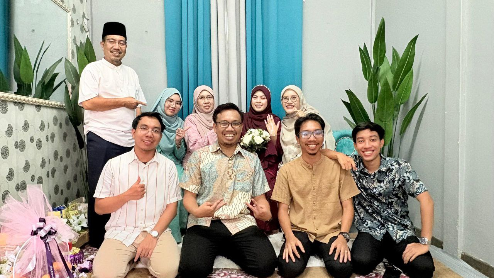
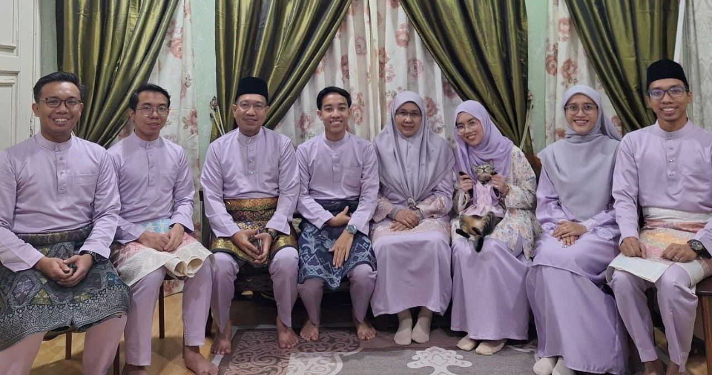

My name is Nurin Khadijah binti Muhammad Noor Afandi. I am 20 years old, and I was born on 10th August 2005 at
Hospital KPMC Kajang. I grew up in Cheras,Selangor a peaceful and beautiful place that I love very much. I
am the youngest child in my family, the fifth out of five siblings. Being the youngest, my family always takes
good care of me and supports me in everything I do. I am currently studying at Universiti Teknologi MARA (UiTM)
Kampus Rembau, where I take the course Information Science Management. I am now in semester 5, which is my final
semester. My course teaches me about managing records, organizing data, and using information effectively. I chose
this course because I am interested in how information is collected, stored, and shared. I have learned many useful
things that will help me in the future. My personality type is ENFP, and I am known as a happy-go-lucky person. I
like to smile, make people laugh, and stay positive even when things are hard. I also love cute things, such as plush
toys, stationery, and decorations that make me happy. My favorite colors are purple and pink because they are bright
and lovely, just like my personality.



 In my free time, I like to read novels and comics, especially those with romance and comedy
stories. My favorite novel is Dheo by Anjel, and my favorite comic is Eleceed. Reading helps
me relax and imagine beautiful worlds and interesting characters. I also enjoy watching movies,
and my favorite movie is Pitch Perfect 2 because it is funny, entertaining, and full of great songs.
I love music too my favorite singers are Seventeen, Treasure, Alpha, Taylor Swift, and One Direction.
Their songs always cheer me up and motivate me. My favorite song is “P Ramlee Saloma” by Alpha, which I
find very emotional and meaningful.
In my free time, I like to read novels and comics, especially those with romance and comedy
stories. My favorite novel is Dheo by Anjel, and my favorite comic is Eleceed. Reading helps
me relax and imagine beautiful worlds and interesting characters. I also enjoy watching movies,
and my favorite movie is Pitch Perfect 2 because it is funny, entertaining, and full of great songs.
I love music too my favorite singers are Seventeen, Treasure, Alpha, Taylor Swift, and One Direction.
Their songs always cheer me up and motivate me. My favorite song is “P Ramlee Saloma” by Alpha, which I
find very emotional and meaningful.
P Ramlee Saloma by Alpha
MY TRAVEL
I also love to travel in Malaysia. I have been too many city in Malaysia state. I have been to Pulau Pinang, Perak, Kedah, Kelantan and Terengganu. You can click the name of these state to see which place I have been to. I hope I can finish travel around Malaysia in 2026